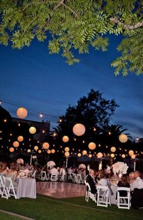
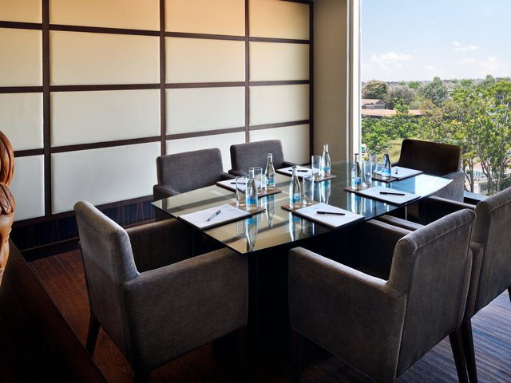
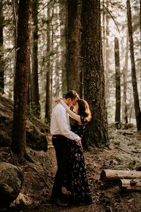
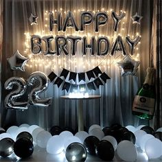
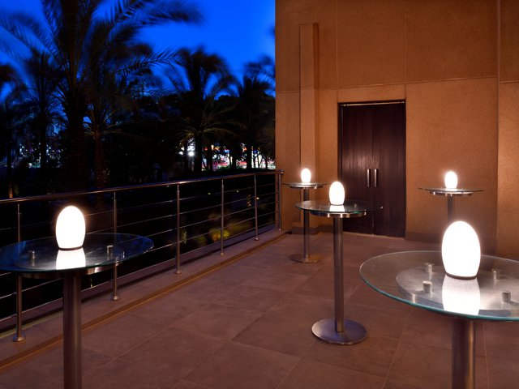

WEDDINGS
The ceremony ends with the groom breaking a glass underfoot.
The couple spend their first moments as man and wife in seclusion (apart from the wedding guests,
and with no other person present) ...


Business meetings
happylands Nairobi means business and we enable our guests to get things done.
With more than 250 square metres of multi-functional event facilities in an excellent
location at the heart of Westlands, we offer one of the most exclusive and convenient venues for
corporate gatherings in Nairobi. Our three Woodvale Ballrooms, together catering up to 220 guests,
are furnished to the highest standards with wenge wood, Italian marble and plush carpeting
. Accented by original pieces of modern African artwork, the spaces have a contemporary yet warm ambience.
Natural light from the floor-to-ceiling glass windows and an outdoor terrace perfect for breakouts,
create a relaxed and open atmosphere.
PHOTOSHOOT
an occasion arranged for photographers to take photographs of a politician or another
famous person, for example for a newspaper. Thesaurus: synonyms and related words. Photography.


BIRTHDAY CELEBRATIONS
Perhaps the best part of planning your event at HappylandHotel
Born is the contagious assurance and calm you will feel while working with our professional event team.
We channel our Colorado cool attitude into our event planning, which means offering thoughtful packages
and promotions to help make even the impossible very possible.
EVENTS
The contemporary elegance of the Happyland Nairobi hotel provides the perfect setting
for memorable private events. From intimate cocktails and exclusive parties to fashion shows,
we have the experience, creativity and venues to host signature gatherings.
In addition to our first floor Woodvale Ballrooms, which can be personalised and decorated to your specific needs,
Happyland Nairobi offers 600 square metres of lush garden space that accommodates a diverse host of events from product launches and exhibitions to charity dinners and social gatherings.
